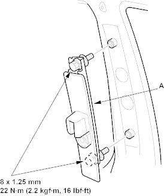
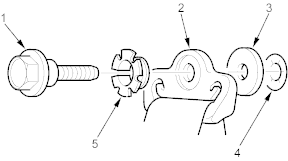
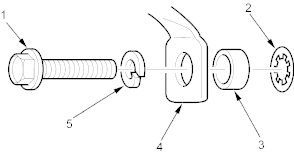

- Remove the center pillar upper trim (see page 20-29)
- Remove the shoulder anchor adjuster (A).

- Install the belt in the reverse order of removal and note these items:
- If the threads on the retractor mounting self-tapping ET screw are worn out, use an oversized self-tapping ET screw made specifically for this application.
- Check that the retractor locking mechanism functions (see page 23-5).
- Assemble the washers, collars and bushing on the upper and lower anchor bolts as shown.
- Before installing the anchor bolts, make sure there are no twists or kinks in the front seat belt.
- Make sure the seat belt tensioner connector is plugged in properly.
- Reconnect the negative cable to the battery.
Upper anchor bolt construction:

- UPPER ANCHOR BOLT
- UPPER ANCHOR
- COLLAR
- TOOTHED LOCK WASHER
- BUSHING
Lower anchor bolt construction:

- LOWER ANCHOR BOLT
- TOOTHED LOCK WASHER
- COLLAR
- LOWER ANCHOR
- SPRING WASHER